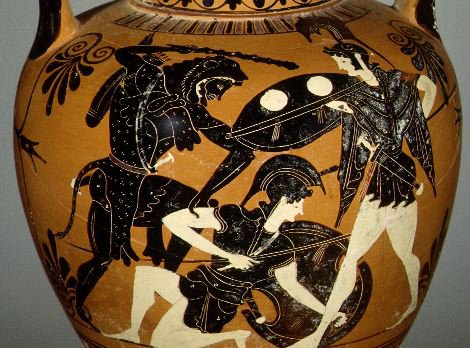

Listen to 'Amazon's belt' in English

|
|
Le huitième travail conduisit Hercule au pays des Amazones, pour en rapporter la ceinture de leur reine comme présent à la fille d'Erysthée. Les Amazones était une nation de femmes guerrières, des archères sans pareilles combattant à cheval. Hercule s'adjoignit pour cette expédition plusieurs héros, dont Thésée. Il advint que la reine des Amazones, fit cadeau de la ceinture à Hercule de sa propre volonté. Mais Héra ne voulut pas que le héros s'en tirât à si bon compte. Elle répandit la rumeur parmi les Amazones que les Grecs avait capturé leur reine et une grande bataille s'ensuivit. Hercule les voyant en armes crut à une trahison. Il tua Hippolyte qu'il dépouilla de sa ceinture.
The eighth Labour took Hercules to the land of the Amazons, to retrieve the belt of their queen for Eurystheus' daughter. The Amazons were a race of warrior women, great archers who had invented the art of fighting from horseback. Hercules recruited a number of heroes to accompany him on this expedition, among them Theseus. As it turned out, the Amazon queen, Hippolyte, willingly gave Hercules her belt, but Hera was not about to let the hero get off so easily. The goddess stirred up the Amazons with a rumour that the Greeks had captured their queen, and a great battle ensued. Hercules seeing them in arms suspected treachery. He killed Hippolyte whom he stripped of the belt.
|